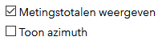

Rolmaat Widget 1.0
for Web App Builder 2.8
Inleiding: de Rolmaatwidget is afgeleid van de tekenwidget voor WAB. Hij maakt gebruik van de hulpmiddelen die al aanwezig zijn in de tekenwidget zodat je vormen en lijnen op de kaart kunt tekenen. De widget verbetert deze ervaring door interactief de geometrie te meten die wordt getekend en de afmetingen op de kaart te tonen. De meetwidget maakt ook gebruik van de ArcGIS API for JavaScript geometryEngine voor het uitvoeren van geodetische of vlakke berekeningen, afhankelijk van de projectie van de basiskaart. Dit betekent dat je nauwkeurige metingen krijgt voor de vormen die je tekent.
Snelle start: Begin met het selecteren van het type meting dat je wilt uitvoeren. Pas de kleur, stijl, transparantie en breedte aan van de vorm die wordt getekend. Je kunt ook de tekstkleur en -grootte wijzigen. Voor de polylijn- en polygoonvormen moet je op verschillende locaties op de kaart klikken of tikken. Voor de andere vormtypen moet je klikken of tikken en slepen om de vorm te tekenen. Met een beetje oefening kun je vormen tekenen die het beste bij je passen.
Bewerken: de lijnen, polylijnen en polygonen die je hebt getekend, kunnen worden bewerkt. Je kunt SHIFT klikken op een vorm om de hoekpunten weer te geven waarop je kunt klikken en slepen om de vorm te wijzigen. Terwijl je dit doet, verandert ook de dimensie van de segmenten. Je kunt ook afzonderlijke metingen verwijderen door met CTRL te klikken. Meer specifieke instructies voor het bewerken staan hieronder.
Selecteer meetinstrument: gebruik dit gedeelte van het dialoogvenster om te selecteren welk type vorm je wilt tekenen en meten. Het geselecteerde instrument wordt gemarkeerd met een lichtgrijze achtergrond. Nu ben je klaar om op de kaart te tekenen. Zodra je de gewenste vorm hebt getekend, wordt de selectie van het instrument weer opgeheven. Als je op de button Wissen klikt, worden alle gemeten vormen van de kaart verwijderd.
Voorbeeld: geeft weer hoe de lijn of polygoon op de kaart wordt getekend. Als je de kleur of grootte wijzigt, wordt dit weerspiegeld in het voorbeeld.
 Voorgedefinieerde symbolen: deze lijsten geven voorgedefinieerde symbolen als startpunt voor de vorm die je gaat tekenen. Je kunt specifieker zijn over kleur, lijndikte of type, zoals hieronder wordt getoond.
Voorgedefinieerde symbolen: deze lijsten geven voorgedefinieerde symbolen als startpunt voor de vorm die je gaat tekenen. Je kunt specifieker zijn over kleur, lijndikte of type, zoals hieronder wordt getoond.
Kleur, Omtrekkleur, Tekstkleur: klik op het bijbehorende kleurvak om een dialoogvenster voor kleurkiezer weer te geven waarin je een kleur kunt kiezen. Je kunt heel precies zijn met kleurwaarden met de RGB-, HSV- of HEX-instellingen. Dit verandert de kleur van de lijn, de vulling van een vlak of de kleur van de tekst die wordt gebruikt voor het meten.
Transparant: gebruik de schuifregelaar om in te stellen hoe transparant een lijn of vulling zal zijn wanneer een vorm wordt getekend.
Teksteigenschappen: in het voorbeeld wordt weergegeven hoe de tekst eruitziet voor elke meetwaarde die op de kaart wordt weergegeven bij het tekenen van een nieuwe vorm. De voorbeeldtekst wordt ook interactief bijgewerkt terwijl een segment wordt getekend, evenals het teksttekstvak. Je kunt de grootte van de tekst aanpassen door een numerieke waarde in te toetsen of de pijlen omhoog en omlaag te gebruiken om de tekst te vergroten of te verkleinen. Als je op het vak Tekstkleur klikt, wordt een kleurkiezer weergegeven waarmee je de kleur kunt kiezen van de tekst die wordt gebruikt voor het meten.
Oppervlaktemaat en Lengtemaat: gebruik de keuzelijsten om de gewenste maateenheden te selecteren.

Metingstotalen weergeven: toont het totaal van alle getekende segmenten en van het gebied als de getekende vorm een polygoon is.
Toon azimuth: indien aangevinkt, toont de azimuth van het getekende segment in graden, minuten en seconden. Als je vormen bewerkt, worden ook de weergegeven azimutwaarden voor elk segment gewijzigd.
Vormen bewerken
Je kunt een getekende vorm bewerken door erop te klikken of erop te tikken. Hiermee worden hoekpunten zichtbaar die je naar nieuwe locaties kunt slepen. Terwijl je sleept, worden de metingen voor de segmenten die aan het hoekpunt zijn gekoppeld, bijgewerkt. Wanneer je klaar bent met slepen, wordt ook de samenvatting voor totale afstand en oppervlakte bijgewerkt.
 Er zijn twee soorten hoekpunten. De grijze stippen vertegenwoordigen een normaal hoekpunt en de witte stippen vertegenwoordigen een spookhoekpunt. Door een spookpunt te slepen, wordt het segment in twee nieuwe segmenten gesplitst met nieuwe metingen. Je kunt dit herhalen en zo veel hoekpunten maken als nodig is voor de meting.
Er zijn twee soorten hoekpunten. De grijze stippen vertegenwoordigen een normaal hoekpunt en de witte stippen vertegenwoordigen een spookhoekpunt. Door een spookpunt te slepen, wordt het segment in twee nieuwe segmenten gesplitst met nieuwe metingen. Je kunt dit herhalen en zo veel hoekpunten maken als nodig is voor de meting.
 Je kunt een hoekpunt verwijderen door er met de rechtermuisknop op te klikken. Hierdoor wordt een verwijderknop weergegeven. Klik op de verwijderknop en het hoekpunt wordt verwijderd. De metingen voor de getekende vorm worden bijgewerkt om het nieuwe segment weer te geven.
Je kunt een hoekpunt verwijderen door er met de rechtermuisknop op te klikken. Hierdoor wordt een verwijderknop weergegeven. Klik op de verwijderknop en het hoekpunt wordt verwijderd. De metingen voor de getekende vorm worden bijgewerkt om het nieuwe segment weer te geven.
Je kunt ook de eigenschappen van de vorm wijzigen. Met een vorm geselecteerd om te bewerken, kun je de lijndikte, lijn- of opvulkleur en lijnstijl wijzigen. Je kunt ook de kleur en grootte van de tekst wijzigen voor de vorm die je wilt bewerken.